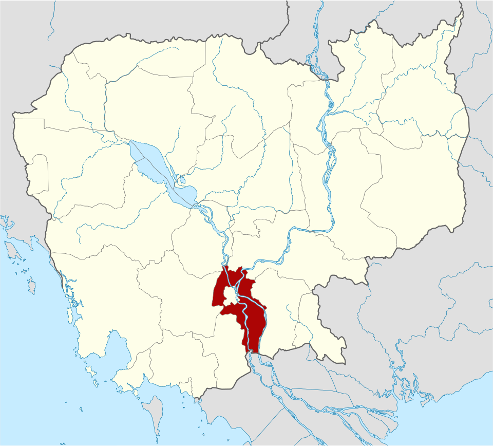
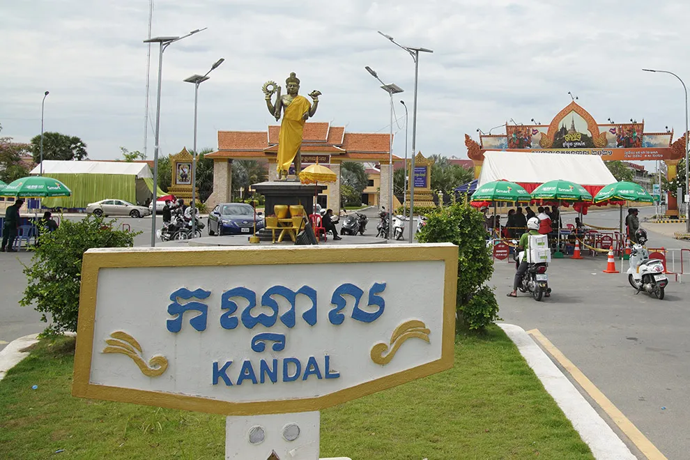
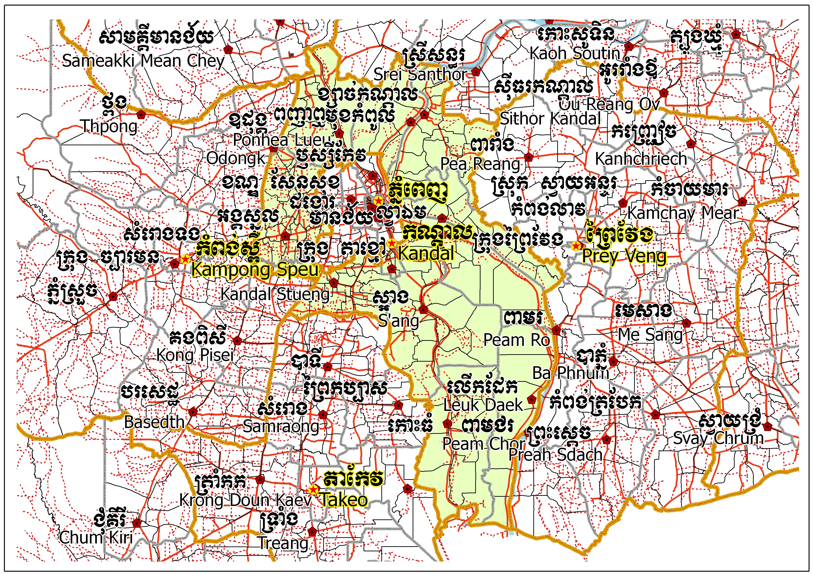
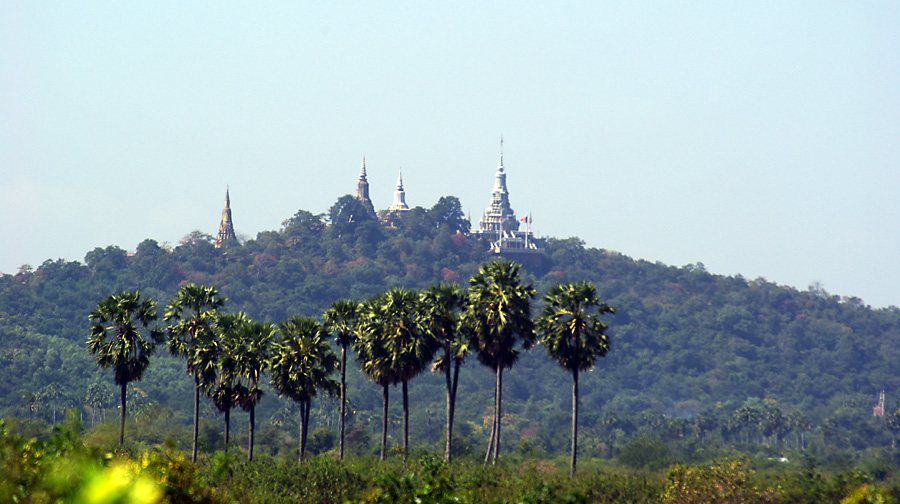
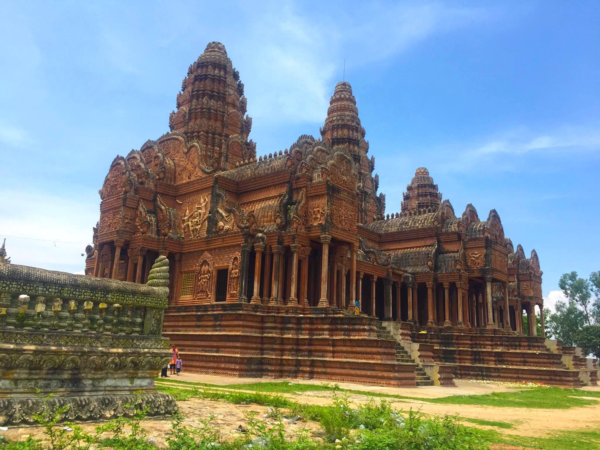

ខេត្តកណ្ដាល
កណ្តាល គឺជាខេត្តនៃប្រទេសកម្ពុជាដែលមានទីតាំងនៅប៉ែកអាគ្នេយ៍នៃប្រទេសនេះ។ ខេត្តកណ្តាល បានបង្ហាញថា មានសក្ដានុពលជាច្រើនដូចជា វិស័យកសិកម្ម ឧស្សាហកម្ម និង ទេសចរណ៍ ជាដែលវិស័យគោលចម្បងក្នុងការអភិវឌ្ឍសេដ្ឋកិច្ចខេត្តទទួលបានការរីកចម្រើន។ រីឯសម្រាប់ប្រព័ន្ធ ហេដ្ឋារចនាសម្ព័ន្ធនៅខេត្តកណ្ដាលគឺជា ខេត្តមានផ្លូវជាតិធំសំខាន់ៗជាច្រើន សម្រាប់តភ្ជាប់ទៅកាន់បណ្ដាខេត្តនានា។ ខេត្តកណ្ដាល ក៏មានស្ពានធំៗឆ្លងទន្លេផងដែរ នឹងមាន ព្រលានយន្តហោះកម្រិតអន្តរជាតិមួយ១កន្លែងផងដែរ។ កសិកម្ម និងការនេសាទ គឺជាឧស្សាហកម្មសំខាន់ពីរនៃខេត្តនេះផងដែរ។ ខេត្តមានព្រំដែន
- ខាងកើតជាប់ខេត្តព្រៃវែង
- ខាងត្បូងជាប់ ខេត្តតាកែវ
- ខាងកើតឈៀងខាងជើងជាប់ ខេត្តកំពង់ចាម
- ខាងកើតឈៀងខាងត្បូងជាប់នឹង វៀតណាម។ ទីរួមខេត្ត គឺក្រុងតាខ្មៅ ដែលមានចំងាយ ១១ គម ខាងត្បូងនៃ[ភ្នំពេញ]។ កណ្ដាលគឺជាខេត្តមួយក្នុងចំណោមខេត្តដែលស្ដុកស្ដម្ភជាងគេក្នុងប្រទេស។ ខេត្តកណា្តលមានស្រុកចំនួន១១ ក្រុង១ ឃុំ១៤៧ ភូមិចំនួន១០៨៧ និង១៤៧សង្កាត់ មានប្រជាជនចំនួន ១០៧៥១២៥នាក់ ហើយខេត្តនេះផងដែរមានផែ្ទដី ៣៥៦៨គីឡូម៉ែតការេ។ ហើយខេត្តនេះផងដែរមានផែ្ទដី ៣៥៦៨ សហាតិមាត្រការ៉េ។ ប្រជាជនខេត្តកណា្តលភាគច្រើនប្រកបរបរកសិកម្ម ដាំ ដំណាំ ក្រៅពីនេះរដូវធើ្វស្រែ ពួកគាត់មានរបរមួយទៀតគឺ របរឡើងត្នោត និងធើ្វស្រូវប្រាំង ព្រមទាំងដាំដំណាំផ្សេងៗទៀត ដើម្បីផ្គត់ផ្គង់ជីវភាពគ្រួសាររបស់ខ្លួន។

លក្ខណៈភូមិសាស្ត្រ
ឃុំសំរោងលើស្រុកអង្គស្នួលខេត្តកណ្ដាល។ ខេត្តកណ្ដាលព័ទ្ធជុំវិញរាជធានីភ្នំពេញទាំងមូល។ ខេត្តនេះក៏ជាប៉ែកមួយនៃផ្ទៃទីក្រុងមេភ្នំពេញធំជាងគេដែលមានប្រជាជនមួយលាននាក់រស់នៅក្នុង និង ព័ទ្ធជុំវិញខេត្ត។ កាលណាយើងធ្វើដំណើរចេញពីភ្នំពេញ ព្រំដែនរវាងខេត្ត-រាជធានីទាំងពីរស្ទើរតែមើលមិនដឹង។ ខេត្តនេះប្រកបដោយផ្ទៃដីសើមទំនាបមានលក្ខណៈធម្មតា ដែលគ្របដណ្ដប់ដោយវាលស្រែ និង ដីដាំដំណាំកសិកម្មដទៃទៀត។ រយៈកំពស់មធ្យមរបស់ខេត្តមិនលើសពី ១០ មាត្រ លើកំរិតទឹកសមុទ្រឡើយ។ ខេត្តក៏មានលក្ខណៈពិសេសដោយសារទន្លេធំបំផុតពីរនៅក្នុងប្រទេសនេះហូរកាត់ ទន្លេទាំងពីរនោះគឺ ទន្លេបាសាក់ និង មេគង្គ។
ភ្នំប្រសិទិ្ធ
- ភ្នំប្រសិទ្ធិ
- ភ្នំស្អាង
- ភ្នំអដ្ឋរស្ស


រដ្ឋបាល
ខេត្តកណ្ដាល កាលសម័យរជ្ជកាលព្រះបាទស៊ីសុវត្ថិមុន្នីវង្ស (១៩២៧‑១៩៤១) ត្រូវបានបែងចែកជាស្រុក និង តំបន់ ទាំងអស់ ១២ ក្នុងនោះមានស្រុកចំនួន ១០ និង តំបន់ចំនួន ២៖
- ខេត្តកណ្ដាល
- ភ្នំពេញ
- តំបន់ថ្នល់ទទឹង
- ស្រុកពញាឮ
- ស្រុកខ្សាច់កណ្ដាល
- ស្រុកមុខកំពូល
- តំបន់វិហារសួគ៌
- ស្រុកកៀនស្វាយ
- ស្រុកល្វាឯម
- ស្រុកកណ្ដាលស្ទឹង
- ស្រុកលើកដែក
- តំបន់លើកដែក
- ស្រុកស្អាង
- ស្រុកកោះធំ
តំបន់ទេសចរណ៍
ភ្នំព្រះរាជទ្រព្យ (ភ្នំឧត្តុង្គ)ភ្នំឧដុង្គមានទីតាំងស្ថិតនៅក្បែររាជធានីឧដុង្គមានជ័យដែលជាអតីតរាជធានីខ្មែរនាសតវត្សរ៍ទី ១៧(ពីឆ្នាំ ១៦១៨ ដល់ឆ្នាំ ១៨៦៦) ហើយត្រូវបានបោះបង់ចោលដោយព្រះបាទនរោត្តមនៅក្នុងឆ្នាំ ១៨៦៦ ដោយធ្វើការផ្លាស់ប្តូររាជធានីទៅកាន់រាជធានីចតុមុខវិញរហូតដល់សព្វថ្ងៃ។ភ្នំឧដុង្គមានចម្ងាយប្រមាណ ៤០ គីឡូម៉ែត្រពីភាគពាយ័ព្យនៃរាជធានីភ្នំពេញ។ភ្នំឧដុង្គគឺជាខ្សែភ្នំមួយដែលលាតសន្ធឹងពីជើងទៅត្បូងប្រវែង ១៥០០ ម៉ែត្រនិងទទឹង ៧០០ ម៉ែត្រ។ទីកន្លែងនេះមានការទាក់ ទាញជាថ្មីបន្ទាប់ពីការកសាងព្រះសក្យមុនីចេតិយដែលជាទីតម្កល់ព្រះសារីរិកធាតុរបស់ព្រះពុទ្ធដ៏ធំនិងព្រះពុទ្ធបដិមាតូចៗជាង ៣០០០ អង្គនៅលើកំពូលភ្នំឧដុង្គជ្រុងខាងជើង ដែលមើលទៅឃើញធំខ្ពស់និងមានភាពស្រស់បំព្រង។ភ្នំនេះមានកំពូល ០៥ គឺកំពូលចេតិយទន្ទឹម កំពូលត្រៃត្រឹង្គ កំពូលភ្នំចេតិយកំពូលបួន ព្រះអង្គចូលបរិនិព្វាន្ត និង កំពូលភ្នំអរិយកាស្សប។ភ្នំឧដុង្គសព្វថ្ងៃមានទីតាំងស្ថិតនៅក្នុងភូមិជ័យឧត្តមនិងភូមិស្រះពោធិ៍ដែលភូមិទាំង ០២ នេះស្ថិតនៅក្នុងឃុំផ្សារដែកនិងភូមិពោធិ៍រ៉ាល់ ភូមិត្រពាំងស្លែង និង ភូមិស្រះពោធិ៍ដែលភូមិទាំង ០៣ នេះស្ថិតនៅក្នុងឃុំភ្នំបាត ស្រុកពញាឮ ខេត្តកណ្តាលនិងមានចម្ងាយផ្លូវប្រមាណជា ៥១ គីឡូម៉ែត្រពីទីរួមខេត្ត។ទេសភាពនៅលើកំពូលភ្នំ នៅពេលយើងឡើងដល់កំពូលនៃភ្នំហាក់បីដូចជាខ្លួនយើងកំពុងជិះលើយន្តហោះព្រោះមើលទៅឃើញដើមត្នោត ផ្ទះសម្បែង ស្រែចម្ការរបស់អ្នកស្រុកព័ទ្ធជុំវិញហើយបើមើលទៅទិស ខាងលិចឃើញភ្នំស្ទុងៗនៅឆ្ងាយសន្លឹមមើលទៅទិសខាងកើតឃើញដៃទនេ្លសាបនិងភូមិអ្នកស្រុកកំពង់ហ្លួងមើលទៅទិសខាងជើងឃើញភូមិវាំងចាស់និងផ្សារឧដុង្គនិងមើលទៅ ទិសខាងត្បូងឃើញផ្លូវជាតិលេខ ០៥ ទៅកាន់រាជធានីភ្នំពេញយ៉ាងវែងអន្លាយហាក់បីដូចខែ្សពួរមួយចង្វាយដែលគេរាយអញ្ចឹង។ភ្នំឧដុង្គមានទីកន្លែងសម្រាប់ជាទីសក្ការៈបូជារបស់ ពុទ្ធសាសនិកកនែ្លងសម្រាប់អង្គុយលំហែមើលទេសភាពដ៏ស្រស់ត្រកាលពីលើកំពូលភ្នំមានលក់ភេសជ្ជៈម្អូបចំណីអាហារសម្បូរបែបជាច្រើនប្រភេទនិងមានលក់របស់វត្ថុអនុស្សាវរីយ៍ជា ច្រើនទៀតផងដែរជូនដល់ភ្ញៀវទេសចរណ៍ទាំងនៅក្នុងស្រុកនិងក្រៅស្រុកគ្រប់ៗរូបដែលបានទៅទស្សនាកម្សាន្ត។ភ្នំឧដុង្គឬភ្នំព្រះរាជ្យទ្រព្យនិងខ្លះទៀតហៅថាភ្នំអដ្ឋរស្សគឺជាអតីត រាជធានីរបស់ប្រទេសកម្ពុជាយើងនាសតវត្សរ៍ទី ១៧។


ប្រាសាទភ្នំបាសិទ្ធ ឬភ្នំប្រសិទ្ធិមានទីតាំងស្ថិតនៅភូមិតាពេជ្រ ឃុំឈ្វាំង ស្រុកពញាឭ ខេត្តកណ្តាល និងចម្ងាយ ២៨គីឡូម៉ែត្រពីរាជធានីភ្នំពេញតាមផ្លូវជាតិលេខ៥ ដល់ផ្សារព្រែកព្នៅបត់ឆ្វេងតាមថ្នល់កៅស៊ូដែលនាំយើងរហូតដល់ក្លោងទ្វារវត្តភ្នំប្រសិទ្ធិត្រៃត្រឹង្ស ដែលស្ថិតនៅខាងស្តាំដៃ។ យើងអាចបន្តដំណើរដោយតាមផ្លូវចាក់ស៊ីម៉ង់ទៅដល់វត្តនៅលើកំពូលភ្នំ។ ភ្នំប្រសិទ្ធិមានបណ្តាយ ៣គីឡូម៉ែត្រគុណ ១គីឡូម៉ែត្រ កម្ពស់ប្រមាណ១៣៨ម៉ែត្រ[១]។ ពេលលោកអ្នកបន្តដំណើរបានចម្ងាយប្រមាណ ១គីឡូម៉ែត្រលោកអ្នកនិងជួបផ្លូវបំបែកពី រួចបន្តដំណើរតាមផ្លូវឡើងអមដោយបង្កាន់ដៃរូបនាគគឺនាំលោកអ្នកទៅដល់កំពូលត្រៃត្រឹង។ រួចបត់ឆ្វេងដៃ យើងនិងឃើញរោងធំមួយប្រក់សង្កសី ដែលជាកន្លែងព្រះពុទ្ធចូលនិពា្វន។ បដិមាននេះធ្វើអំពីថ្មគឺដាប់ថ្មភ្នំមានបណ្តោយប្រវែង ២៤ម៉ែត្រ។ ព្រះភ័ក្រ្តព្រះអង្គ ត្រូវបែកបាក់នៅសម័យខ្មែរក្រហមហើយត្រូវបានធ្វើសារជាថ្មីឡើងនៅឆ្នាំ១៩៨៦។ នៅផ្នែកខាងកើតត្រង់ព្រះកេសព្រះអង្គ គេបានរៀបថ្មបាយក្រៀមផ្ទប់ទៅនឹងថ្មភ្នំ។ បើយើងមើលពីព្រះពុទ្ធចូលនិព្វានទៅខាងក្រោមចង្កេះភ្នំខាងជើងយើងនិងឃើញប្រាសាទស្រីគ្រប់លក្ខណ៍។ នៅជិតអ្នកតាម្ចាស់ស្រុកប្រមាណ២០ម៉ែត្រយើងឃើញ តួប៉មប្រាសាទស្រីគ្រប់លក្ខណ៍ ផ្នែកខាងក្រោមលំអដោយទ្វារបញ្ឆោត ដែលមានការបែកបាក់យ៉ាងដំណំ។
រមណីដ្ឋានភ្នំស្អាង មានទីតាំងនៅភូមិ ឃុំស្អាងភ្នំ ស្រុកស្អាង ខេត្តកណ្ដាល លោកអ្នកអាចធ្វេីដំណេីបានតាមផ្លូវជាតិលេខ 21 និងផ្លូវជាតិលេខ 21A។ ផ្លូវជាតិលេខ 21A តាមរង្វង់មូលក្រុងតាខ្មៅ មកទិសខាងកេីត(សួនមាត់ទន្លេ) រួចបត់ស្ដាំធ្វេីដំណេីរតាមក្រោមស្ពានតាខ្មៅមកត្រង់ ឆ្លងកាត់សង្កាត់ តាខ្មៅ(ក្រុងតាខ្មៅ) ឃុំស្វាយរលំ ឃុំសិត្បូ ឃុំរកាខ្ពស់(ជាចំណុចប្រសព្វរវាងផ្លូវជាតិលេខ 21A និងផ្លូវជាតិលេខ 21 ត្រង់វត្តឈូងលាភ) រួចបត់ឆ្វេងបន្តធ្វេីដំណេីរលេីផ្លូវជាតិលេខ 21។ ផ្លូវ 21 តាមរង្វង់មូលក្រុងតាខ្មៅ មកទិសខាងត្បូង រហូតមកដល់ផ្សារស្អាង មន្តដំណេីរមកបន្តិចមានប្រមាណ 70ម៉ែត្រ នៅខាងស្តាំដៃមានផ្លូវក្រាលកៅស៊ូ បន្តដំណេីរទៅមុខទៀត ហួសផ្សារព្រែកគយបន្តិច ត្រង់ចំណុចផ្លូវកោងមានខ្លោងទ្វាវត្ត(វត្តស្អាងភ្នំ) រួចបន្តដំណេីទៅទៀតប្រមាណជា 3គីឡូម៉ែត្រទៅដល់ភ្នំស្អាង។
.jpg)